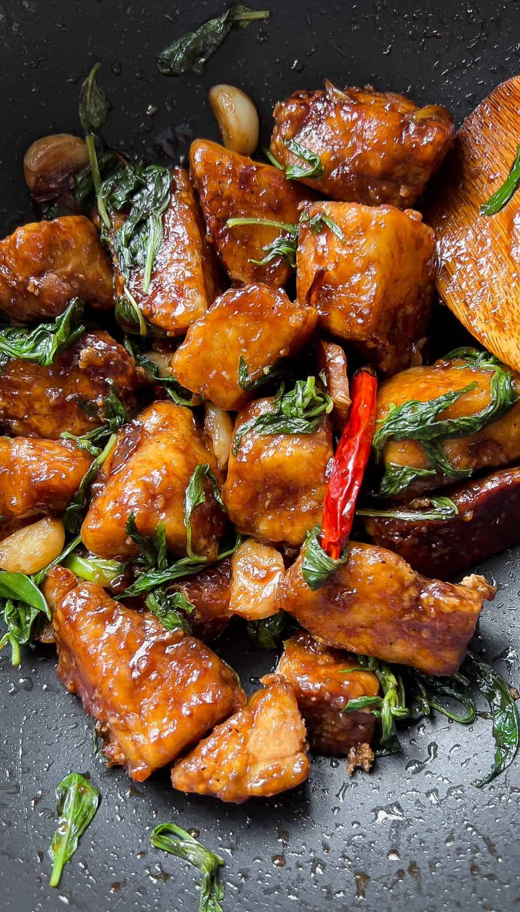

Three Cup Tofu

Adapted from Jeeca's "Three Cup Tofu" recipe on The Foodie Takes Flight
Description
Tofu flavored with ginger, garlic, and fresh basil in a savoury, sweet sauce
Ingredients
- 20 oz extra firm tofu
- 1 tsp garlic powder
- 1 tbsp olive oil
- 3 tbsp roasted or dark sesame oil
- 6 thin slices fresh ginger
- 8 cloves garlic peeled
- 1 scallion, sliced
- 3 tbsp light or regular soy sauce
- 2 tbsp rice wine vinegar
- 1-2 tbsp brown sugar to taste
- 1/4 cup water
- 1 jalapeno, diced
- Handful fresh basil leaves, leaves removed from stems
Steps
- Cut tofu into large, rectangular chunks.
- Season tofu with soy sauce, garlic powder, and pepper. Toss to coat. Leave to marinate for 10-15 minutes.
- In a non stick pan, heat some cooking oil over medium high-heat.
- Once hot, stir-fry ginger, garlic, jalapenos, white part of scallions. Stir-fry for 2 minutes until scallions start to brown
- Add soy sauce, rice-wine vinegar, sugar, and water. Let pan come to a boil, around 2-3 minute
- Add tofu, then coat in sauce.
- Add in basil leaves. Toss to cook basil. Turn off the heat.